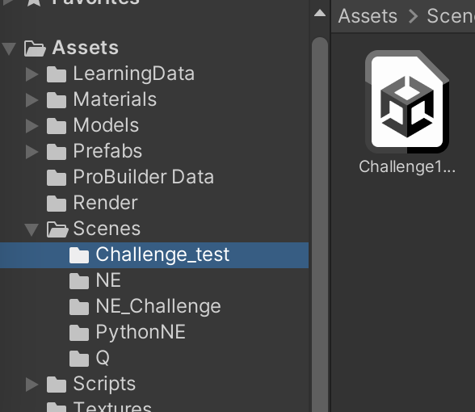

このサンプルコードでは, ニューロ進化(Neuro Evolution)とQ学習で車が各コースを走れるようになる進化・学習をします.
そのままのコードだと, Q学習ではコースの一部を走れるようになるところまで進化します. また, ニューロ進化ではすべてのコースを走れるようになるところまで進化します. そのため, この課題でニューロ進化を用いる場合は, 単にコースを走り切るだけではなく, 障害物を避けたりするなどの走る+αの動作を車ができるようになることが期待されています.

Google Driveのリンクからダウンロードし, 適当なフォルダで展開してください. その後, Unity HubのOpenから展開した.projフォルダを開いてください.
Google DriveにはUnityのライブラリは上げていませんが, Unity Hubで開く際に自動的に生成されます.
macOS, Unity 2021.3.1f1以外で開く際には警告が出ますが, 警告に従ってバージョンの変更やパッケージのインストールなどをすれば以下の環境で動作することを確認しています.
ProjectタブのAssets > Scenesから選択したいシーンをダブルクリックして開きます.
画面上部の再生ボタンを押すと学習が始まります. 学習中にはGame画面に表示されるスライダでプログラムの実行速度を調整できます. コンピュータへの負荷を少なくしたい場合は, 描画をオフにすることもできます。
/Assets/Scripts/Car/CarAgent.cs/Assets/Scripts/Car/CarController.cssteeringの値を受け取りタイヤを回転させる)教科書(Mind Render AI Drill)の3, 4, 5章にサンプルコードが何をしているかがわかりやすく書いてあるので, 詳しくはそちらもご覧ください.
この課題ではあらかじめChallengeが設定されています. もちろん必ずしもこのChallengeに沿って課題を進める必要はありませんが参考にしてみてください. シーンファイルは以下にあります. 各シーンを開き再生を押すとニューロ進化による学習が始まります.
/Assets/Scenes/NE_Challenge/Challenge*.unity
コース上に数個の岩が設置されるのでその岩に当たらずにコースを一周できるように進化・学習させる(岩の位置は固定)
Challenge1と同じくコース上に数個の岩が設置されるのでその岩に当たらずにコースを一周できるように進化・学習させる(岩の位置は固定ではなくランダム)
坂の上から岩が転がり落ちてくるのでその岩に当たらずにコースを一周できるように進化・学習させる
コース上に一定間隔で岩が置かれていて近づくと転がり落ちてくる. 岩の大きさや速度はランダム
Pythonを使うと, Numpyなどの数値計算モジュールやTensorflow, PyTorchなどの機械学習モジュールを用いることができます. 詳しくは教科書等を参考にしてください.
必要なパッケージがダウンロードされていない場合はpipなどで適宜ダウンロードしてください.
$ pip install numpy
$ pip install asyncio
$ pip install asyncio-dgram
$ pip install torch
/env/src/PyNECommunicator.pyを実行している状態にします$ python /env/src/PyNECommunicator.py
/Asset/Scenes/PythonNE/下のシーンファイルをUnityから実行します現在/env/src/PyNNBrain.pyはNNBrain.csをPytorchに翻訳したものですが, Pythonで新しいニューラルネットワークの構造なども定義することができます.
通常のシーン(Challengeなど)をPythonに対応したシーンにするには以下の変更が必要です. 詳しくは既にPython対応しているシーンを参照して下さい.
PyNEEnvironment.csにするNEEnvironment.csをPyNEEnvironment.csにします. また, Agent PrefabをCar@Blueに設定します.